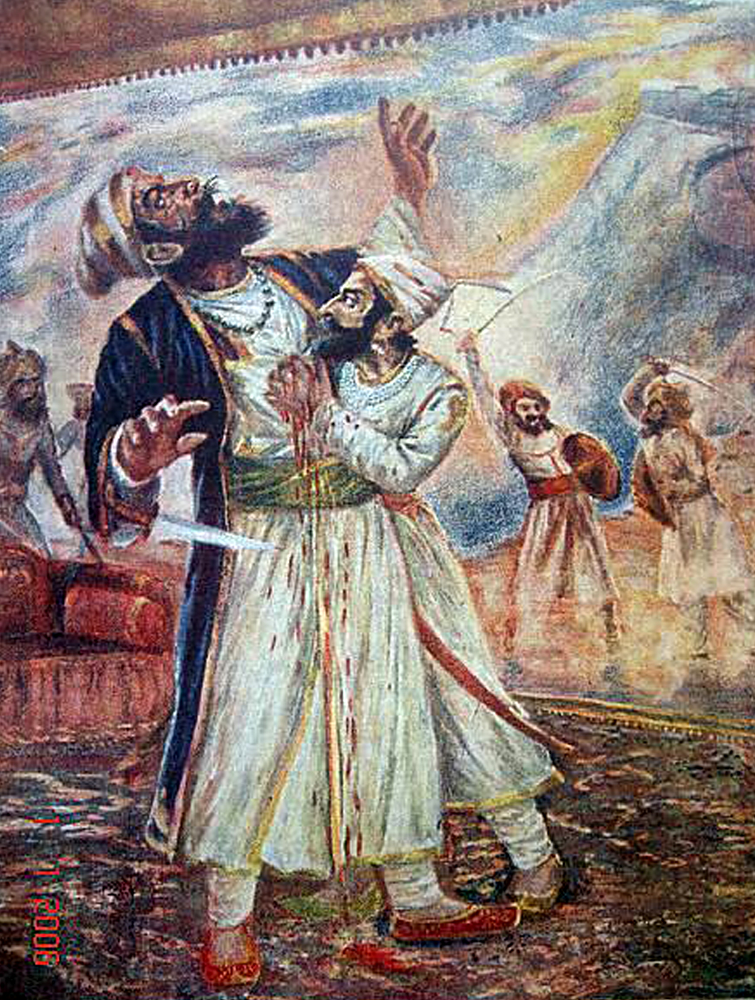

Combat with afzal khan

The Bijapur sultanate was displeased with their losses to Shivaji's forces, with their vassal Shahaji disavowing his son's actions. After a peace treaty with the Mughals, and the general acceptance of the young Ali Adil Shah II as the sultan, the Bijapur government became more stable, and turned its attention towards Shivaji.[42] In 1657, the sultan, or more likely his mother and regent, sent Afzal Khan, a veteran general, to arrest Shivaji. Before engaging him, the Bijapuri forces desecrated the Tulja Bhavani Temple, a holy site for Shivaji's family, and the Vithoba temple at Pandharpur, a major pilgrimage site for Hindus.[43][44][45]
Pursued by Bijapuri forces, Shivaji retreated to Pratapgad fort, where many of his colleagues pressed him to surrender.[46] The two forces found themselves at a stalemate, with Shivaji unable to break the siege, while Afzal Khan, having a powerful cavalry but lacking siege equipment, was unable to take the fort. After two months, Afzal Khan sent an envoy to Shivaji suggesting the two leaders meet in private, outside the fort, for negotiations.[47][48]
The two met in a hut in the foothills of Pratapgad fort on 10 November 1659. The arrangements had dictated that each come armed only with a sword, and attended by one follower. Shivaji, suspecting Afzal Khan would arrest or attack him,[49][b] wore armour beneath his clothes, concealed a bagh nakh (metal "tiger claw") on his left arm, and had a dagger in his right hand.[51] What transpired is not known with historical certainty, mainly Maratha legends tell the tale; however, it is agreed that the two wound up in a physical struggle that proved fatal for Khan.[c] Khan's dagger failed to pierce Shivaji's armour, but Shivaji disemboweled him; Shivaji then fired a cannon to signal his hidden troops to attack the Bijapuri army.[53]
In the ensuing Battle of Pratapgarh, Shivaji's forces decisively defeated the Bijapur Sultanate's forces. More than 3,000 soldiers of the Bijapur army were killed; and one sardar of high rank, two sons of Afzal Khan, and two Maratha chiefs were taken prisoner.[54] After the victory, a grand review was held by Shivaji below Pratapgarh. The captured enemy, both officers and men, were set free and sent back to their homes with money, food, and other gifts. Marathas were rewarded accordingly.[54]